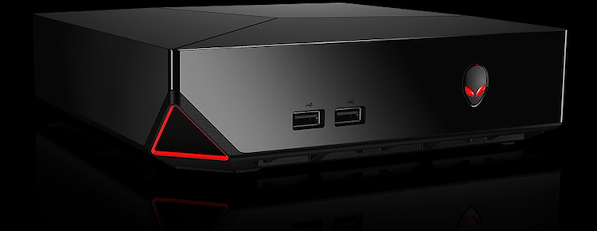
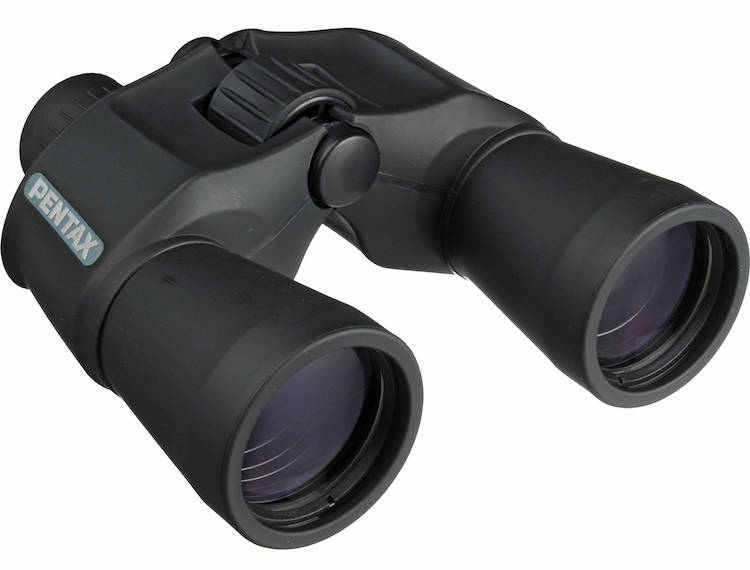

2015년도 지름 결산
2015년도 거의 끝이 다 되었습니다. 크리스마스가 지나고 일주일이 되면 이제 2016년으로 새롭게 시작하겠네요. 그런 의미에서 1년간 크게 지른 것 위주로 요약 정리(?)해서 지름신이 되어보도록 하겠습니다. 임의 순서, 생각나는대로입니다. :)
-
Vitamix 5300 Mixer

이전에 사용하던 믹서기 용기가 깨지는 바람에, 이참에 좋은 것으로 가자! 해서 구입한 믹서기 입니다. 왠만한 것은 죄다 갈아버리고 정말 곱게 갈립니다. 도깨비 방망이나 기존에 사용하던 100불 미만의 Kitchen Aid 와는 다른 발군의 성능을 보여줍니다.
가격이 흠이므로 4/5점!
-
Google Nexus 5X + Project Fi
기존 넥서스5 액정이 깨져서 5X가 출시되기를 수개월 기다린 끝에 Project Fi와 함께 넘어갔습니다. 가장 좋은 점은, 실내에서 Cellular network가 안터졌는데, Wi-fi를 이용해서 전화가 아무 문제 없이 된다는 점입니다. 추가로 한국에 방문 시 로밍 부담이 덜하다는 (Wi-fi 연결 시 미국과 동일한 접속 환경) 점이 좋네요.
넥서스 5X는 아직 마시멜로가 안정화가 안된 탓인지 리프레시가 좀 보입니다.
3/5점!
-
Logitech MX Anywhere2 Wireless Mouse

회사 노트북과 맥북프로레티나, 그리고 에얼리언웨어 알파를 동시에 편하게 쓸 수 있는 방법을 모색하다 MX Master와 MX Anywhere2 를 보게 되었습니다. 둘 중, 가지고 다니기 편한 MX Anywhere2를 할인해서 사게 되었네요. 3개의 디바이스를 동시에 페어링하고 스위치가 버튼 하나로 간편하게 되서 회사에서 맥북프로와 회사 노트북을 번갈아 가며 쓰기 무척 편해졌습니다.
다만 아쉬운 점은 스크롤 버튼이 무한휠, 클릭휠 모드 변경이라 다른 버튼을 가운데 버튼으로 지정해야 한다는 점이네요.
4/5점!
-
Logitech K480 Bluetooth Keyboard

블랙프라이데이 할인으로 뒤도 안보고 지른 제품입니다. MX Anywhere2와 마찬가지로 3개까지 페어링 되고 조그다이얼을 돌려서 바로바로 바꿀 수 있습니다.
다만 키감이 영 적응이 쉽지 않네요. 너무 구분감이 커서 손이 좀 아픕니다.
2/5점!
-
Motorola Moto G (3rd Generation)
아내 스마트폰을 바꾸기 위해 산 제품인데, 내부 용량을 8GB 로 사는 바람에 고생 했습니다. 다만, 동작 자체는 아주 무리없이 깔끔하게 작동하고 에러가 거의 없습니다. 16GB를 샀더라면 아마 계속 사용했을 것 같네요.
4/5점!
-
Dell Alienware Alpha (i3 Edition)

N36L이 영화를 재생하기 어려울 만큼 성능이 버벅대다보니 NAS로만 사용되고, 기타 미디어는 Chromecast가 있으나 NAS를 그대로 재생하기 쉽지 않아 한대 장만하게 되었습니다 (로 쓰고, 사고싶어서 샀다고 읽으시면 됩니다)
Custom NVIDIA GPU가 들어있는데 성능이 750Ti쯤 나온다고 하네요. 실제로 위쳐3를 중옵에 헤어웍스만 끄고 1920 x 1080 으로 무리없이 돌립니다. 같이 제공되는 Xbox 360 컨트롤러로 위쳐3를 하면 재밌습니다~
3/5점!
-
The Witcher 3 : Wild Hunter
올해의 게임으로 불려도 손색없을만한 게임입니다. 최고의 그래픽, 빠져드는 이야기, 다양한 부가퀘스트 등 무엇하나 빠지는 구석이 없이 잘 만들어진 게임입니다.
5/5점!
-
Triumph Wykin Leather Jacket

눈물을 머금고 트라이엄프 본네빌을 판매하고 나니 남는건 스토어 크레딧뿐이더군요. 어디다 크레딧을 쓸까 하다가 가죽재킷 하나 장만했습니다.
초반에 나는 가죽 냄새를 잡느라 조금 고생했지만 점점 몸에 맞아가는 느낌이 아주 좋습니다. 캘리포니아 겨울 날씨 생각하면 한 여름 빼고는 언제나 입고 다닐 수 있을 것 같네요.
4/5점!
-
Asus RT-AC68U Wireless Router
지금은 최강의 자리를 AC86 시리즈에게 넘겨주었지만, 구입할 당시만 해도 상대할 공유기가 없을만큼 최고의 성능이었습니다. 다양한 기능은 반의 반도 사용하지 못하지만, 모뎀이 문제 된 적은 있어도 공유기가 말썽을 부린적은 없네요. 신호도 멀리까지 잘 인식되서 집안에서 Wi-fi 사용하는 부담이 매우 줄었습니다.
5/5점!
-
Moleskin Notebook (A5 size)
노트로 사용하기 위해 구입했습니다. 다만 만년필과 같이 사용하기엔 너무 번져서 별로네요.
값은 비싼데 재질이 별로라 1/5점!
-
Volkswagen Passat Wolfsburg Edition
본네빌을 팔고 구입한 자가용입니다. 저렴하게 샀다고 좋아했는데, 폭스바겐 스캔들이 터지면서 중고가가 폭락해서 10년동안 강제로 타고 다니게 생겼습니다. ㅜ.ㅜ
연비 좋고, 핸들링 깔끔하고, 성능도 170마력으로 무난하고, 트렁크도 넓고, 어느하나 빠지지 않는 중형차인데 미국에서 브랜드가치가 엉망이라 상대적으로 싸게 구입가능합니다.
폭스바겐 스캔들 때문에 2/5점! 내 중고가 하락분 보상하라!!
-
Graco Nautilus 3-in-1 Car Seat
파삿에 장착하기 위해 산 카시트입니다. 베이비 부터 어린이까지 계속 사용할 수 있게 등받이도 뺄 수 있게 되어있습니다. 다만, 둘째 아이가 잠들 때 보니, 이전 카시트보다는 편히 못자더군요. 고개가 계속 떨구어 집니다.
안전성은 최고이지만 편안함에서 감점으로 3/5점!
-
VIAIR 85P Portable Air Compressor
바람을 종종 주입하기위해 샀습니다. 아내가 운전하다 나사가 박혀서 펑크났을 때 요긴히 쓰였네요. (두번이나!) 한국에는 오토코스란 걸출한 에어 컴프레셔가 있지만 여긴 Viair가 최고인듯 합니다.
4/5점!
-
WeatherTech Custom Fit Cargo Liners for Odyssey
오디세이의 1열, 2열을 웨더텍으로 교체한 뒤, 때를 노리다가 3열 접고 웨더텍으로 교체했네요. 기존엔 얼룩덜룩한 카펫이 보기 흉했는데 깔끔한 고무매트로, 흙먼지가 걱정이 없습니다. 다만 살짝 주변부가 들뜹니다. 시간이 지나면 괜찮아질 줄 알았는데 아직도 완전히 맞진 않네요.
3/5점!
-
Coleman Instadome 5-person

캠핑을 시작하기위해 코스트코에서 구입한 텐트입니다. 가격 싸고, 빠르게 펴고 접고, 바람 잘 막아주고, 어느정도 방수는 되고, 어느 하나 깔게 없는 텐트네요. 요세미티 가서도 2박3일동안 매우 잘 썼습니다.
5/5점!
-
Coleman Northstar® PerfectFlow(TM) Instastart(TM) Propane Lantern

캠핑장에서 저녁에 모닥불 피우고 이야기나누는 즐거움은 이루 말할 수 없죠. 그런데 LED 랜턴을 쓴다면 그 밝은 백색등 때문에 눈이 쉽게 피로해 집니다. 그래서 물색한 것이 가솔린 랜턴과 프로판 랜턴입니다.
그 중 사용하기 편한 프로판 랜턴으로 구입했습니다. 밝지만 주황색의 은은한 랜턴을 보고 있기만 해도 마음이 안식이 됩니다.
5/5점!
-
Pentax 65792 XCF 10x50 Binoculars with Case

별자리를 보기위해 구입했네요. 원래대로라면 돕소니안 망원경을 사야하는데, 집이 생기기 전까지는 일단 참기로 했습니다.
타호와 요세미티에서 별자리를 보았는데, 확실히 깔끔한 별상을 보여주고 육안으로는 보이지 않는 것까지 잘 보여서 즐겁게 밤하늘을 관찰할 수 있었습니다.
4/5점!